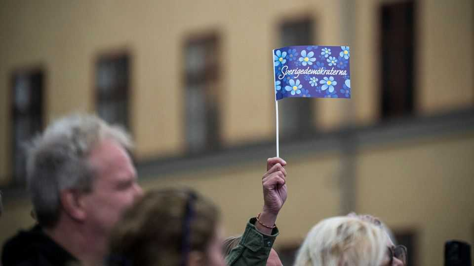
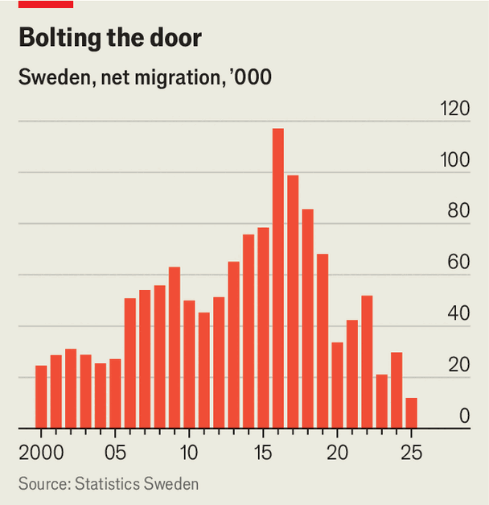

Sweden squashed migration. The populist right wants to go further
The Sweden Democrats could be heading for a bigger role in government
July 16th 2026

NOT FAR from central Stockholm lies Stora Essingen, a sleepy island covered with lush trees and pretty houses. For years its residents voted overwhelmingly for the Moderate Party, Sweden’s mainstream conservatives. But since 2022, when the party entered a power-sharing pact with the hard-right anti-immigrant Sweden Democrats (SD), voters have signalled their displeasure at its alliance with the hitherto pariah.
Instead voters have shifted towards the centre-left Social Democrats, whose activists are knocking on doors ahead of the general election on September 13th, in the hope that it can keep the SD out of the next government. Many voters in places like Stora Essingen view their country as a sensible, liberal and cosmopolitan democracy. The election will test whether that idea of Sweden wins out—or whether, having had a taste of anti-immigrant populism, Swedes want more of it.
The SD argues that it has tamed (or expelled) its most extreme elements. Its logo, once a blazing torch, is now a blue-and-yellow flower. In the election in 2022, amid anger over a surge in migration a few years earlier, it became the biggest right-wing party in parliament and backed a government headed by Ulf Kristersson, the leader of the Moderates; the SD got policy influence, but no ministerial jobs. Today Mr Kristersson promises the SD cabinet roles if the coalition is re-elected.

The election will reveal whether the SD’s popularity can endure once migration slows to a trickle. Sweden’s hyper-restrictive policies—admired by much of the European right—have reduced annual net migration from 117,000 at its peak in 2016 to 12,000 last year (see chart).
The Social Democrats tightened asylum rules and border checks while in power during Europe’s refugee crisis in the mid-2010s. “The first wave of changes tried to make Sweden less attractive to people trying to come here,” explains Louise Dane of the Swedish Refugee Law Centre, an NGO. But as the number of arrivals fell and Mr Kristersson’s government took over, the focus shifted. “Now the policy changes are about trying to get people who are already here with residency permits to leave.”
The government aims to repatriate poorly integrated or out-of-work migrants. The migration ministry boasts that more people are returning to countries such as Iraq and Somalia than are arriving from them. Atervandring (repatriation) is a watchword for the SD. “We want a lot of people to leave,” says Ludvig Aspling, the party’s migration spokesman. “There’s no reason to have people here from other countries if they’re not contributing.”
To that end the government is encouraging migrants to go. Since January refugees have been able to claim up to SKr350,000 ($36,000) to return to their country of origin—nine times what a similar scheme offers in Britain. Only 600 people a year are expected to take it. The SD argues this would increase if welfare benefits were trimmed. It wants to expand the scheme to naturalised citizens, too.
A “good behaviour” law, passed last month, allows the government to deport migrants for infractions such as unpaid debts. It has tightened family-reunification rules and stopped issuing permanent residence to refugees. The SD also wants to downgrade those who already hold this status to temporary residence.
A chunk of voters likes these plans. But as migration has dropped, the SD’s popularity has remained stuck at around 20%. The party’s main issue is losing its salience. Last year just 23% of Swedes named integration as one of their biggest concerns, compared with 54% in 2015, according to surveys by the University of Gothenburg’s SOM Institute. That could help the Social Democrats, who struggle to convince voters they are tough on migration.
For the right, this shift has made politics awkward. Last month public outrage caused the government to ease rules that had led to the deportation of teenagers who grew up in Sweden. Business groups have begun complaining that they cannot get foreign talent. The Liberal Party, part of Mr Kristersson’s coalition, opposes the SD’s push to revoke permanent residency.
Some voters who tolerated the SD’s rougher edges when migration was a bigger worry may find them harder to ignore today. On July 5th Richard Jomshof, a senior SD politician, said: “It is no more strange to hate Islam than it is to hate national socialism”. Some fear that talk like this risks emboldening ugly extremes (something the SD strenuously denies).
Populist-right parties across Europe face a challenge of staying relevant even as rates of migration slow. Many will be watching this election to see if the SD’s pivot—to trying to remove migrants who have already arrived—will be as popular with voters as the previous wave of anti-immigrant policies. ■
To stay on top of the biggest European stories, sign up to Café Europa, our weekly subscriber-only newsletter.